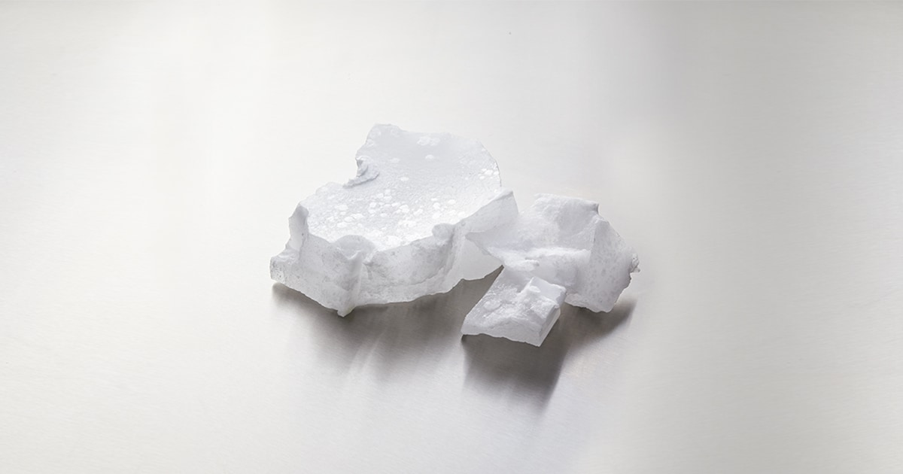

Fully Refined Paraffin Wax Overview
Fully Refined Paraffin Wax is a high-purity petroleum wax known for its clean appearance, low oil content, and dependable performance in industrial and commercial applications. It is widely used in candles, cosmetics, packaging, pharmaceuticals, paper coating, and food-contact uses where consistency, stability, and a white or colorless finish are important.
What It Is
Fully refined paraffin wax is produced from petroleum refining and undergoes extensive purification to remove impurities, color bodies, and most residual oil. In general, this grade contains less than 0.5% oil content, which gives it a harder texture, lower odor, and a more translucent to white appearance than semi-refined wax. Because of its high level of refinement, it is considered the premium grade of paraffin wax. It is often selected when a product needs a clean-burning wax, a smooth finish, or a material that meets stricter quality requirements for cosmetic, food, or pharmaceutical-related applications.
Main Benefits
One of the main advantages of fully refined paraffin wax is its purity. The low oil content helps improve brightness, hardness, and stability, while also reducing odor and discoloration in the final product. It also offers strong moisture resistance, good moldability, and reliable melting behavior, which makes it useful in both manufacturing and packaging. For candle makers, it supports a smooth finish and consistent performance; for industrial users, it provides a dependable base material that blends well with additives and fragrances.
Typical Applications
Fully refined paraffin wax is used in candle manufacturing, especially for premium candles that require a clean look and steady burn characteristics. It is also common in cosmetics and personal care products, where its smooth texture and high purity make it suitable for creams, balms, and related formulations. Other common uses include food packaging, paper coating, electrical insulation, polishing compounds, and pharmaceutical applications. Its low odor and colorless to white appearance make it especially useful where appearance and product cleanliness matter.
Why Choose It
For buyers looking for a reliable high-purity wax, Fully Refined Paraffin Wax offers the right balance of performance, cleanliness, and versatility. It is a preferred choice for manufacturers who need a stable raw material that supports product quality and a professional final appearance. While our core expertise is bitumen, we also source and supply related commodities like Fully Refined paraffin wax for verified buyers.
